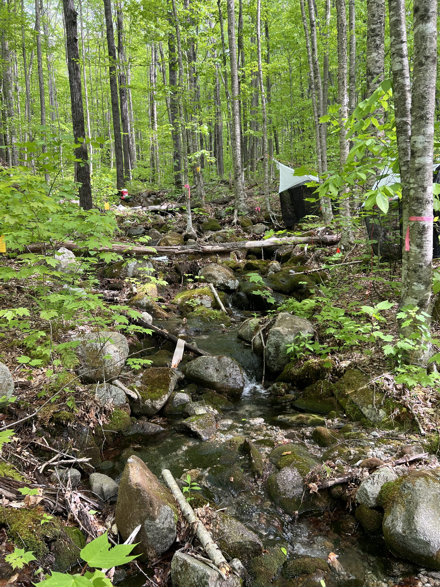
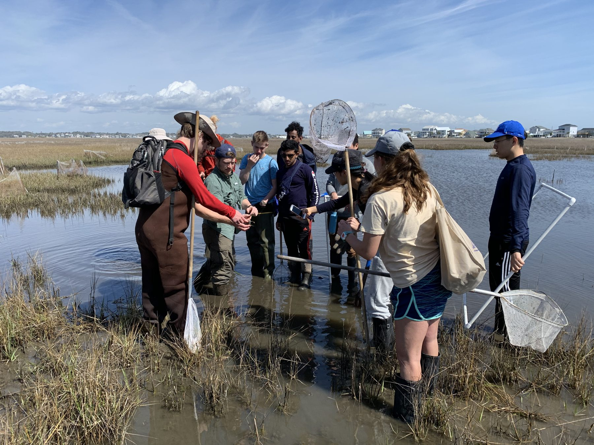
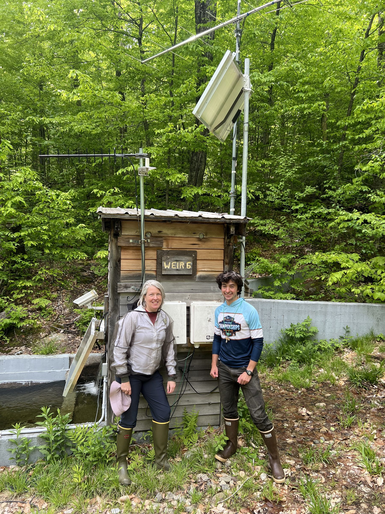

Bernhardt Lab
Aquatic–Terrestrial Biogeochemistry
Research
We are aquatic ecologists and watershed biogeochemists whose research is principally concerned with tracking the movement of elements through ecological systems. Our research program is quite diverse, but each of our funded efforts focuses on how human activity within landscapes alters the movement of water and the cycling of elements into and within aquatic ecosystems. Our work aims to document the extent to which the structure and function of aquatic ecosystems is being altered by land-use change (urbanization, agriculture, mining) and global change (rising temperatures, CO2, sea levels). Ultimately, this information is necessary to determine whether and how ecosystem change can be mitigated or prevented through active ecosystem management. Much of our work to date has direct application to modern environmental management problems — we are interested in attacking basic questions about how ecosystems work whose answers have immediate policy relevance.
Four connected themes
Our research group works on a range of questions across different ecosystem types, but four themes connect most of what we do. Across them, we are interested in how human activities alter the movement and transformation of elements across landscapes and how those changes propagate through watersheds, rivers, and coastal ecosystems. Much of our work takes place in systems that have been heavily altered by people — urban watersheds, mined landscapes, agricultural wetlands, and coastal forests experiencing saltwater intrusion. Our approach mixes field experiments, long-term ecosystem monitoring, sensor measurements, remote sensing, and increasingly large synthesis datasets.
Our species has become extraordinarily good at liberating, fixing, transporting, concentrating, and redistributing elements. Modern economies depend on moving nutrients, metals, and synthetic compounds through the environment at enormous rates. The diversity of synthetic chemicals now present in soils, rivers, and sediments has increased rapidly over the past century, and in many places these compounds are interacting with ecosystems in ways we still poorly understand.
Working in ecosystems affected by mining, urbanization, and other forms of intensive land use has made us particularly interested in how chemical change reshapes ecosystem processes. In streams draining mined or urban landscapes, for example, we frequently observe sharp declines in biodiversity along with major shifts in microbial communities. One of the questions that has motivated our work is whether those biological changes translate into altered ecosystem metabolism and nutrient cycling. If particular microbial metabolic strategies are more sensitive to contaminants than others, disturbances may shift the balance of linked pathways such as denitrification or methane production.
These questions led to collaborations with environmental chemists, engineers, and toxicologists through the Center for the Environmental Implications of Nanotechnology. In that work we examined how engineered nanomaterials move through aquatic ecosystems and how their properties — particle size, surface chemistry, and interactions with organic matter — affect ecological responses. Working in that interdisciplinary setting also exposed our group to a wide range of analytical tools we had not previously used in ecosystem studies.
More recently, climate-driven changes to coastal landscapes have become a major focus of the lab's research program. Much of the North American Coastal Plain is currently experiencing rapid saltwater intrusion associated with sea level rise, land subsidence, drought, and storm events. One of the most visible outcomes is the spread of "ghost forests," where formerly forested wetlands are converted to standing dead trees as salinity increases. Through a combination of field studies and remote sensing, our group and collaborators are mapping where these transitions are occurring and examining how they affect soil carbon stocks, greenhouse gas emissions, and dissolved organic carbon export from coastal watersheds. This work has also drawn us into collaborations with researchers interested in the social and economic consequences of coastal ecosystem change.
Biogeochemical activity in ecosystems is rarely evenly distributed across space or time. Instead, many processes occur at especially high rates within small features or brief windows in time. These locations and moments — often referred to as ecosystem control points — can have disproportionate influence on ecosystem function.
Our research has often focused on identifying where these control points occur and how processes operating at small spatial scales propagate through larger ecosystems. Earlier work in forest soils showed that microbial activity and nutrient turnover in rhizosphere soils can differ dramatically from the surrounding bulk soil. In aquatic systems we have shown that processes occurring within stream channels — areas that occupy only a small fraction of watershed area — can strongly influence the timing and magnitude of nutrient export from entire catchments.
More recent work from our group highlights the importance of biological structures that function as control points within stream ecosystems. In headwater streams of New England we have found that bryophyte mats play a surprisingly large role in stream productivity and nutrient cycling. These moss mats trap fine particulate material carried by flowing water and support dense algal communities that are otherwise nearly impossible to measure on the surrounding rock surfaces. Because headwater streams make up the majority of river network length globally, understanding the role of bryophytes could change how we think about nutrient uptake and energy flow at the scale of entire river networks. With new NSF funding we are now examining how bryophyte abundance varies among streams and how these patches influence biodiversity and ecosystem processes downstream.
Another long-standing theme of our work is the tight coupling between carbon (~energy) and nutrient cycles. Many of the most interesting questions in ecosystem biogeochemistry arise when we consider multiple elements simultaneously rather than treating carbon, nitrogen, or phosphorus in isolation.
In forest soils, we examined how carbon exuded by plant roots stimulates microbial mineralization of nitrogen. In wetlands, we studied how hydrologic shifts alter the relative export of nitrogen, phosphorus, and carbon from restored landscapes. In streams, we have examined how dissolved organic nitrogen interacts with inorganic nutrient pools to influence ecosystem metabolism.
This interest in coupled elemental cycles naturally led to work on ecosystem energetics in rivers. Stream organisms constantly alter the concentrations of oxygen and carbon dioxide in the water through photosynthesis and respiration. By measuring these changes over daily and seasonal timescales, we can estimate the metabolic balance of stream ecosystems.
Advances in environmental sensors have now made it possible to collect these measurements continuously. Through collaborative efforts such as the StreamPULSE project, we assembled high-frequency metabolic data from hundreds of rivers. These data allowed us to describe the energetic regimes of flowing waters and explore how factors such as light availability, hydrology, and nutrient supply influence ecosystem metabolism.
Building on that work, a current NSF Macrosystems project examines the timing, magnitude, and sources of greenhouse gases emitted from rivers included in the National Ecological Observatory Network. A key question is how much of the carbon dioxide and methane released from rivers originates from in-stream biological activity versus inputs from surrounding landscapes. Addressing that question requires integrating ecosystem metabolism measurements with watershed characteristics across many sites.
The influence of any landscape patch on downstream ecosystems depends strongly on its position within the watershed and its hydrologic connectivity with other patches. Disturbances that alter the supply or form of biologically important elements, therefore, tend to propagate along hydrologic flow paths.
This perspective has shaped much of our work on environmental disturbance. In urban watersheds, we examined how altered hydrology and nutrient loading propagate downstream through river networks. In Appalachian mining regions, we studied how large-scale landscape disturbance reshapes watershed hydrology, weathering processes, and aquatic biodiversity for decades after mining operations cease.
Coastal landscapes provide another example of disturbance unfolding over long time scales. In coastal wetlands, we have examined how drought-driven saltwater intrusion alters wetland biogeochemistry and greenhouse gas emissions long after the initial salinization event.
Long-term ecological records have been central to this work. We are closely involved in research at the Hubbard Brook Experimental Forest, where weekly streamwater and precipitation samples have been collected since the early 1960s. These data helped establish the existence of acid rain and later documented the effects of the Clean Air Act on watershed chemistry. Together with colleagues, we are now using these records to examine how climate variability, shifting snowpack dynamics, and the legacy of acid deposition are influencing stream metabolism, carbon cycling, and nutrient export.
A more recent direction in the lab's research program has been the synthesis of long-term watershed datasets across sites. Through the NSF-funded MacroSheds project, we assembled hydrologic and biogeochemical data from dozens of long-term watershed studies across the United States. The goal was simply to make these datasets easier to access and analyze across sites. The resulting database now allows researchers to explore patterns in watershed chemistry and hydrology across climate gradients and over multiple decades. Just as importantly, the project has helped train students and early-career scientists in working with large environmental datasets through workshops and collaborative analysis efforts.
Current projects
The four themes above are the throughline; these are the specific, currently funded efforts they show up in.

National Science Foundation
Bryophyte mats in New England headwater streams turn out to play an outsized role in stream productivity and nutrient cycling — trapping particulate material and hosting algal communities nearly unmeasurable on the bare rock around them. Because headwater streams make up roughly 90% of stream network length globally, this could change how the lab thinks about nutrient uptake at the scale of entire river networks. The project asks what role bryophytes play in headwater structure and function, how that capacity varies across streams, and how much they matter for biodiversity and ecosystem function network-wide. Led by postdoc Heili Lowman, with co-PI Chris Solomon (Cary Institute of Ecosystem Studies).
NSF Macrosystems
A five-year effort, led with Amanda DelVecchia (UNC-Chapel Hill) and postdoc Nick Marzolf, examining how much of the greenhouse gas emitted from rivers in the National Ecological Observatory Network comes from in-stream metabolism versus inputs from the surrounding landscape. Builds directly on the completed StreamPULSE project, which estimated the metabolic regimes of hundreds of rivers — explore that data at data.streampulse.org.

NSF Coastal SEES · NASA · NC Sea Grant
Mapping the spread of ghost forests and saltwater inundation across the North American Coastal Plain, with Xi Yang (UVA), Ryan Emanuel (Duke), and Tamlin Pavelsky (UNC). PhD student Spencer Rhea is measuring how coastal salinization affects soil carbon stocks and riverine DOC export; Yuyang Wang is studying how the invasive reed Phragmites is expanding into salt marsh as the climate shifts. Follow the broader Coastal SEES project at sweetteasaltycoast.com.

NSF LTER · NSF LTREB
Since 1963, stream and precipitation samples have been collected weekly from the Hubbard Brook valley in NH's White Mountains — the world's longest continuous streamwater and precipitation chemistry monitoring record, co-led with Emma Rosi (Cary Institute). These data first documented the existence of acid rain and the effect of the Clean Air Act; the current LTREB phase asks how variable winter snowpack, shifting forest phenology, and the legacy of acid deposition are together reshaping the timing and form of water and solute export. PhD student Audrey Thellman is reconstructing the long-term climate history of HBEF streams using remote sensing.
A five-year effort with Matt Ross (Colorado State) collating and analyzing data from every long-term watershed study in the US, to build shared data infrastructure and train the next generation of watershed scientists. Data scientists Mike Vlah, Spencer Rhea, and Wes Slaughter, along with postdocs Amanda DelVecchia and Nick Marzolf, Heili Lowman, and PhD student Audrey Thellman, were all deeply engaged in this work. Explore the MacroSheds data portal.
A 3-year Research Coordination Network led with Xi Yang (UVA), Ryan Emanuel, and Kiera O'Donnell, building a connective intellectual network among the researchers and practitioners studying salt water intrusion and sea level rise (SWISLR) across the North American Coastal Plain. See swislr.org.
With PhD candidates Jonny Behrens and Sarah Raviola and lab manager Steve Anderson, this team mapped how the ecological benefits and risks of Durham's primary watershed overlap with the economic and social geography of the people living in it — merging biology, environmental chemistry, urban ecology, and social science, in partnership with the Ellerbe Creek Watershed Association.
A decade of work as Ecosystem Research Theme leader for Duke's Center for the Environmental Implications of Nanotechnology, examining how chronic, low-level exposure to engineered nanomaterials moves through aquatic ecosystems — led first by Ben Colman, then Marie Simonin. PhD candidate Jonny Behrens has extended this into how complex urban contaminant mixtures affect stream metabolism.
Artisanal gold mining is now the dominant source of global atmospheric mercury pollution. Jackie Gerson led field studies of mercury cycling in Peru's Madre de Dios region — a biodiversity hotspot facing some of the fastest-accelerating rates of mining-driven deforestation and mercury pollution in the tropics.
A four-year grant with Brian McGlynn studying the topographic, hydrologic, biogeochemical, and biodiversity impacts of mountaintop removal — mapping the full extent of mined land, estimating valley-fill volume, and documenting shifts in stream hydrographs, weathering rates, and biodiversity across the region. See the Data & Tools page for the interactive maps that came out of this work.
Science in service to society
It is important to us that the science produced by the lab be useful to people working to manage and restore ecosystems. Many of the environmental challenges we face — water pollution, climate change, ecosystem degradation — are problems that require scientific information that is both credible and accessible.
Several of our research efforts have emerged directly from questions raised by managers, regulators, and community organizations. Work on mountaintop coal mining helped quantify the cumulative impacts of mining on Appalachian rivers and contributed to broader policy discussions about mining practices. Research on coastal saltwater intrusion is increasingly informing conversations about climate adaptation and land management along the coastal plain.
Engagement with practitioners and policymakers often improves the science itself — these interactions sharpen the questions we ask and help ensure that our research addresses problems that matter outside the university.
Looking ahead
Over the next decade, the lab's research will continue to integrate long-term observations, large-scale synthesis, and interdisciplinary collaboration — to measure how ecosystems respond to accelerating environmental change, to assess how those responses may be contingent upon prior disturbance, and to produce insights that contribute to sustained ecosystem functions and biodiversity. Key priorities include advancing macroscale watershed science, improving predictions of greenhouse gas emissions from inland waters, understanding the ecological consequences of saltwater intrusion across coastal landscapes, and leveraging long-term ecological records to detect emerging ecosystem transformations.
This work is also expected to be synergistic with Emily's role as the incoming Director of Cornell's Atkinson Center for Sustainability, beginning Fall 2026.